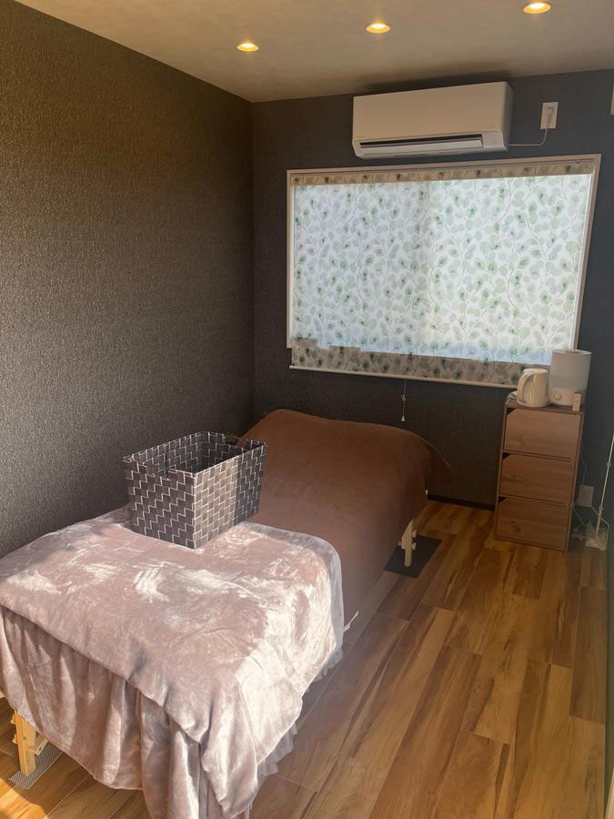
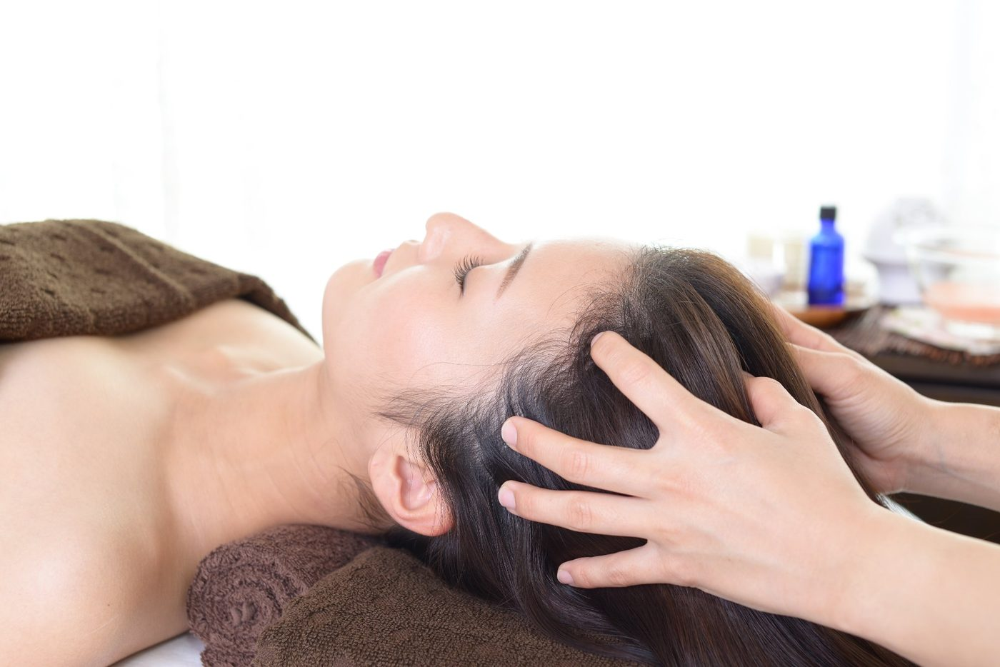
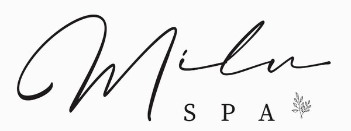
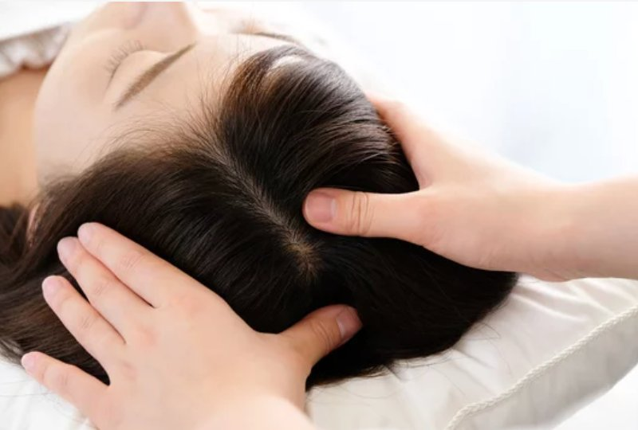
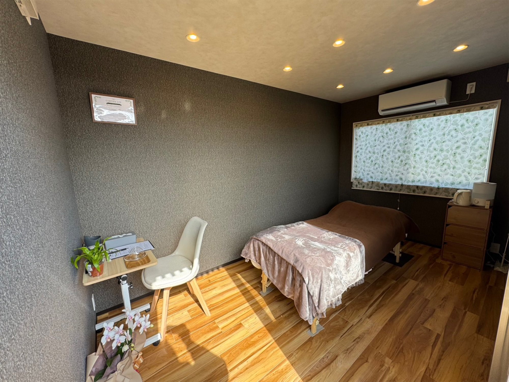
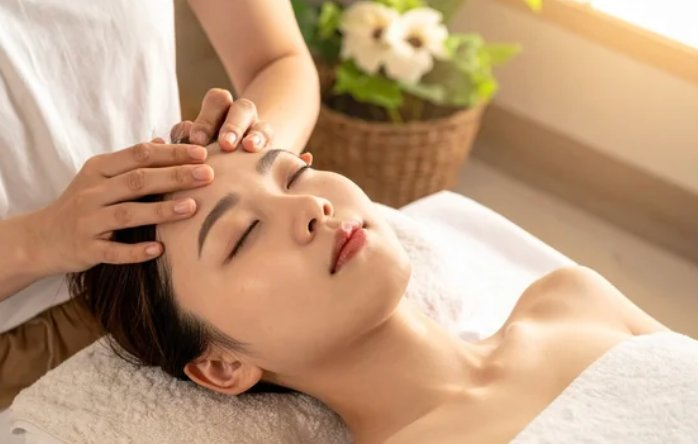
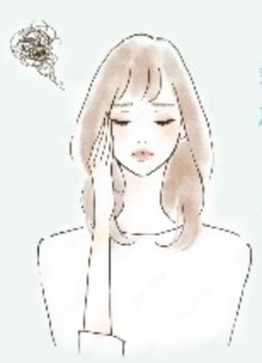
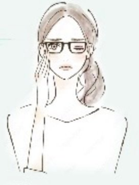
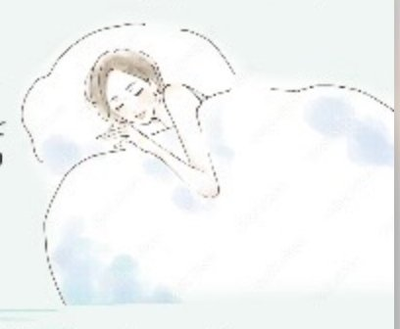
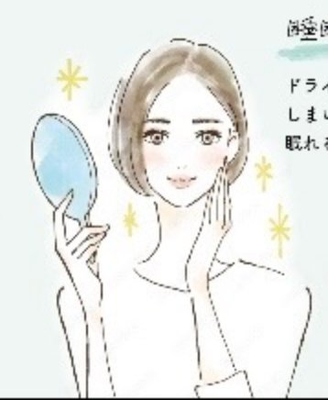

Gallery
サロン内装
完全予約制のプライベート空間で、
誰にも邪魔されない極上の時間を。




心と頭を
ときほぐす、
極上の休息時間を

頭部のケアだけに特化した専門店だからこそ、深い知識と高い技術でお応えします。様々なメニューを扱う総合サロンとは異なり、本格的な施術を提供。専門店ならではのクオリティを、ぜひ体感してください。


他のお客様と顔を合わせることなく、あなただけの時間をお過ごしいただけます。施術中の寝顔も、すっぴんも、誰にも見られない安心感。周りを気にせず、心から寛げる空間です。
水やオイルを一切使用しないドライ施術。服も髪も濡れないので、仕事帰りやお買い物のついでにそのままお立ち寄りいただけます。施術後はそのままお出かけいただけるのもうれしいポイントです。

佐賀・小城・牛津で人気のドライヘッドスパ専門店 Milu Spa。
髪を濡らさず頭皮をもみほぐし、頭のこりをほぐして血行を改善します。

頭皮をやわらかくすると、頭の重だるさが改善。頭皮の血流が悪くなると、脳に酸素が行き渡りにくくなるので、佐賀・小城のドライヘッドスパで頭の疲れやストレスをリフレッシュ！
つらい眼精疲労や、それにともなう頭痛の改善ができます。頭のもみほぐしによって、血流が改善するから、一日中パソコンを使うオフィスワーカーや、スマホのヘビーユーザーなど目の疲れに悩む方におすすめ。

頭部をもみほぐし血流が整うと、首や肩もすっきり。頭の血流改善により目の疲労も回復させられ、それもまた首肩のこりに効果的。

ドライヘッドスパを施術の方のほとんどの方が眠てしまいます。そしてその晩から多くの方がぐっすり眠れるようになり、寝起きがスッキリ爽快に。
頭皮のもみほぐしで、顔の筋肉をぐいっと引き上げてリフトアップ。顔の血流も良くなって、むくみやくすみ、クマの改善にも効果が期待できます。

完全予約制のプライベート空間で、
誰にも邪魔されない極上の時間を。

ドライヘッドスパサロン Milu Spa
Owner: Ai Yanagi
「毎日のデスクワークで頭が重く、目もショボショボしていました。施術後は頭がスッキリして、目の奥の疲れまで取れた感じがして驚きました。また来ます！」
30代女性・佐賀市よりご来店
「完全個室で他のお客さんと会わないのがありがたかったです。すっぴんで行っても気にならないし、仕事帰りにそのまま寄れるのが最高です。」
40代女性・小城市よりご来店
「慢性的な頭痛持ちで半信半疑でしたが、施術後から頭が軽くなりました。着替えなしで気軽に来られるので、月1回のルーティンにしています。」
50代女性・多久市よりご来店
※ お客様の感想には個人差があります。掲載は許可をいただいております。
水やオイルを一切使用しない頭部マッサージです。髪も服も濡れないので、仕事帰りやお買い物のついでにそのままお立ち寄りいただけます。着替えも不要で、施術後はそのままお出かけいただけます。
頭の重だるさ・眼精疲労・慢性的な頭痛・首や肩のこり・睡眠の質低下・顔のたるみ・アンチエイジングなど、幅広いお悩みに対応しています。頭皮の血流を改善することで、これらの症状の緩和が期待できます。
当サロンは完全予約制のプライベートサロンです。事前のご予約をお願いしています。公式LINE または お電話にて承りますので、お気軽にご連絡ください。LINEは24時間受付可能です。
はい、7歳以上のお子様を対象とした「キッズヘッドケア（20分）」をご用意しています。グランドオープン記念価格は1,500円（通常2,000円）です。
はい、駐車場を完備しています。国道34号線沿い・グッデイ牛津店近くですので、お車でのアクセスも便利です。佐賀市内・多久・武雄方面からもご利用いただけます。